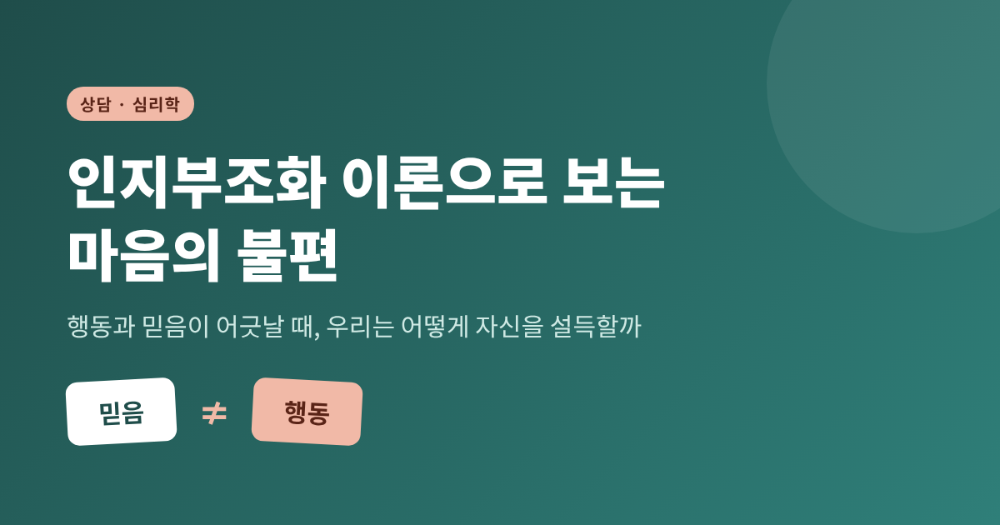
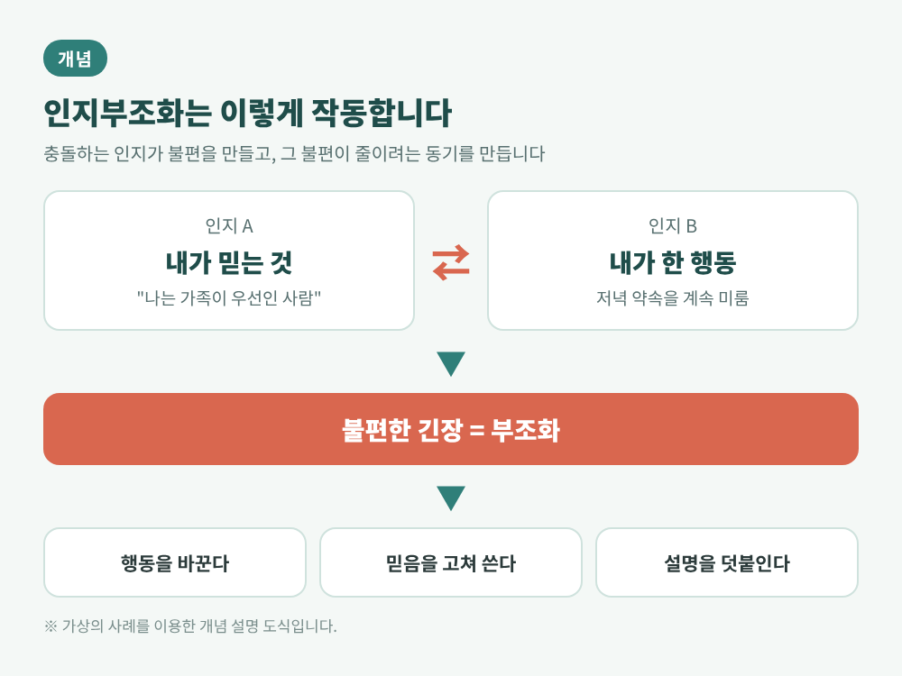
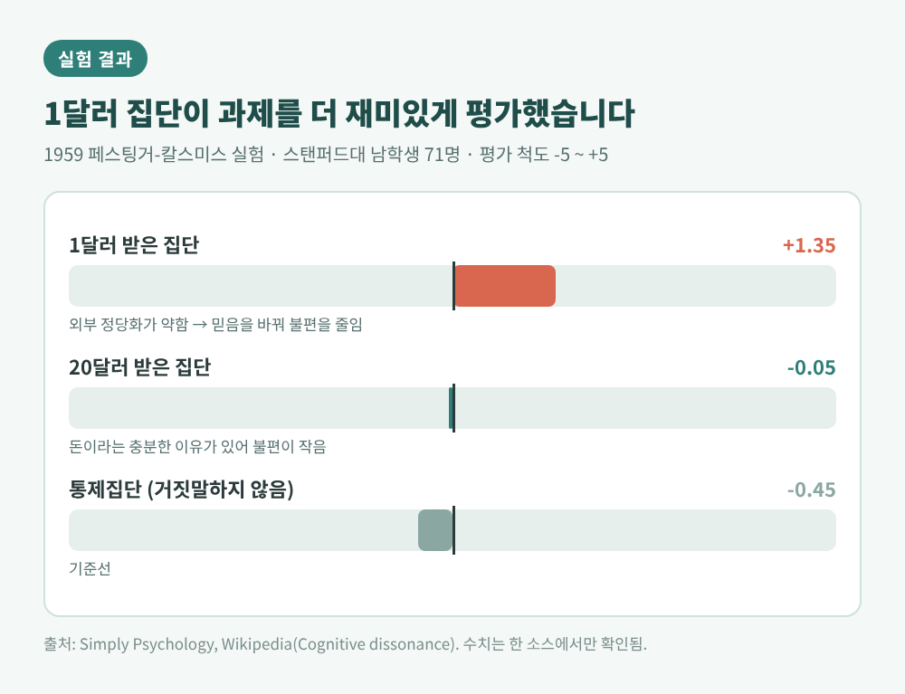
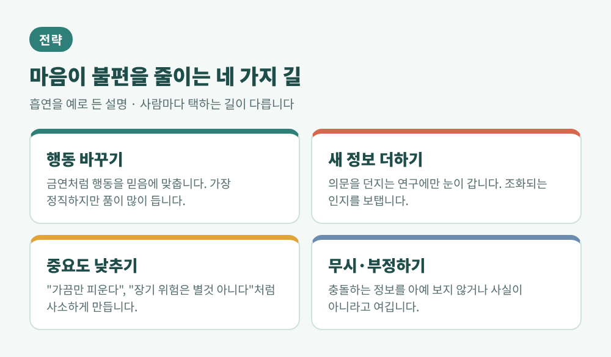
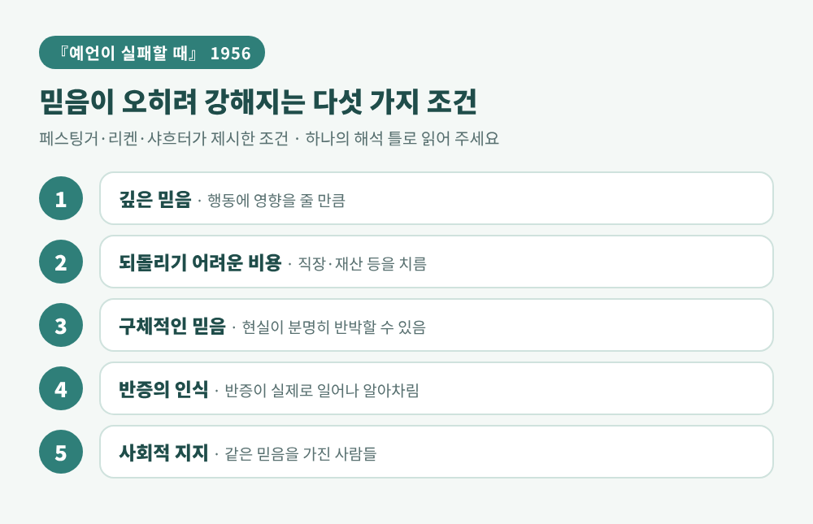
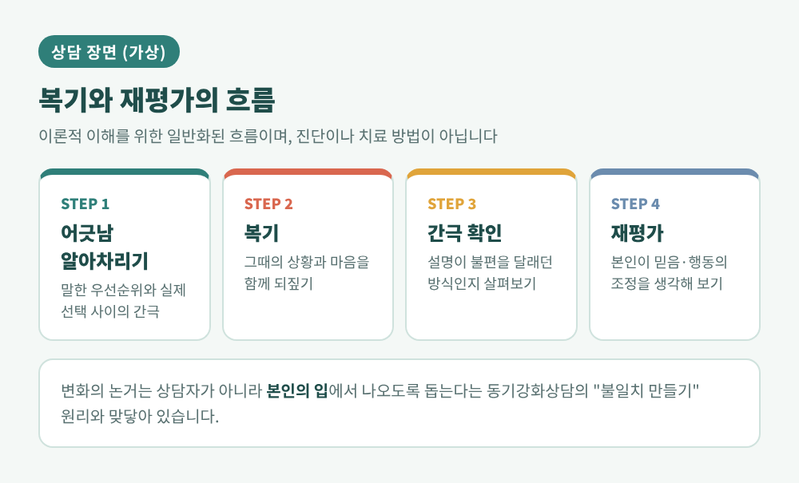
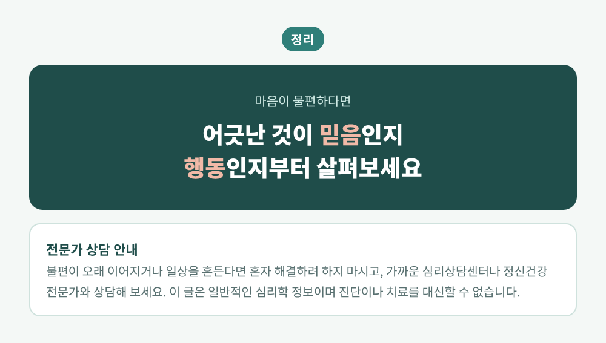

인지부조화 이론으로 보는 마음의 불편, 행동과 믿음이 어긋날 때

오늘은 심리학자 레온 페스팅거가 1957년에 제시한 인지부조화 이론을 이야기해 보려 합니다. 행동과 믿음이 어긋날 때 마음이 왜 불편해지는지, 사람은 그 불편을 어떻게 달래는지를 살펴봅니다. 이어서 이 이론이 상담 장면에서 어떻게 읽히는지도 정리해 보겠습니다.
핵심만 먼저 말씀드리면 이렇습니다. 사람은 행동과 믿음이 어긋나면 불편함을 느끼고, 그 불편을 줄이려고 행동이든 믿음이든 어느 한쪽을 움직입니다. 문제는 그 방식이 늘 정직하지는 않다는 점입니다.
■ 인지부조화란 무엇인가
인지부조화는 서로 충돌하는 인지를 동시에 가질 때 생기는 정신적 불편 상태를 말합니다. 여기서 인지란 신념, 태도, 행동을 두루 가리킵니다. 이 불편은 사람을 움직입니다. 믿음을 바꾸게 하거나, 충돌을 설명으로 지우게 하거나, 행동을 바꾸게 합니다.
페스팅거는 사람이 내적 일관성을 추구한다고 보았습니다. 그의 기본 전제는 세 가지로 정리됩니다. 부조화는 심리적 불편을 일으킨다는 것, 그 불편이 줄이려는 동기를 만든다는 것, 그리고 사람은 부조화를 키울 만한 정보를 피한다는 것입니다.
흥미로운 것은 이 이론의 출발점입니다. 페스팅거는 1934년 인도 지진 뒤에 퍼진 소문에서 영감을 얻었다고 전해집니다. 당시 퍼진 소문을 두고 페스팅거는 이미 느끼던 공포를 "정당화"해 주는 소문이라고 보았습니다.

■ 1959년 페스팅거-칼스미스 실험: 1달러와 20달러
이론을 대표하는 실험이 1959년의 페스팅거-칼스미스 실험입니다. 스탠퍼드대 남학생 71명이 약 한 시간 동안 아주 지루한 과제를 했습니다. 나무못을 4분의 1바퀴씩 돌리는 식의 작업이었습니다.
과제가 끝나면 실험자는 대기 중인 다음 참가자에게 "과제가 재미있었다"고 말해 달라고 부탁했습니다. 대기 중인 사람은 사실 협조자였습니다. 조건은 세 가지였습니다. 20달러를 받는 집단, 1달러를 받는 집단, 그리고 아무에게도 말하지 않은 통제집단입니다.
결과는 상식과 반대였습니다. −5에서 +5까지의 척도에서 1달러 집단은 +1.35, 20달러 집단은 −0.05, 통제집단은 −0.45로 과제를 평가했다고 보고됩니다. 보수가 적은 쪽이 오히려 과제를 더 재미있었다고 답한 것입니다.
해석은 이렇습니다. 20달러를 받은 사람에게는 거짓말을 할 충분한 외부 이유가 있었습니다. "돈을 받았으니까"라고 설명하면 끝이니 불편이 작았습니다. 1달러를 받은 사람에게는 그런 이유가 없었습니다. "나는 별것 아닌 돈에 거짓말을 한 사람인가"라는 불편이 생겼고, 그 불편을 줄이려고 "사실 그 과제가 꽤 재미있었다"로 믿음을 고쳐 쓴 셈입니다.
한계도 짚어 두겠습니다. 이 평가 수치는 한 소스에서만 확인했습니다. 또 인공적인 과제와 학생 표본에 의존한다는 비판이 있고, 부조화가 없어도 같은 결과가 나온다는 자기지각이론(Bem, 1967)의 설명도 있습니다. 다만 긴장을 알약 탓으로 돌릴 수 있게 하면 태도 변화가 사라졌다는 후속 실험(Zanna와 Cooper, 1974)이 있어서, 불편한 각성이 실제로 작용한다는 쪽에 힘이 실렸습니다.

■ 마음은 불편을 이렇게 줄입니다
부조화를 줄이는 길은 크게 세 갈래로 설명됩니다. 인지를 바꾸는 것, 조화되는 인지를 더하는 것, 그 인지의 중요도를 낮추는 것입니다.
흡연을 예로 들면 풀어 쓰기가 쉽습니다. 행동을 바꾸는 길은 금연입니다. 가장 정직하지만 가장 힘듭니다. 합리화는 "가끔만 피운다"는 식입니다. 새 정보를 더하는 길은 흡연과 암의 연관에 의문을 던지는 연구에만 눈이 가는 것이고, 태도를 조정하는 길은 장기 위험을 별것 아니라고 줄여 보는 것입니다. 충돌하는 정보를 아예 무시하거나 부정하는 길도 있습니다.
여기서 눈여겨볼 대목이 있습니다. 2020년 한 이론 논문은 이 전략들을 감정조절의 한 형태로 보자고 제안합니다. 회피, 반박, 자기용서 같은 방식은 일찍 쓰이고 노력이 덜 들며, 문제를 다시 짜거나 행동을 바꾸는 방식은 더 나중에, 더 많은 품이 들어서 쓰인다는 설명입니다. 같은 상황에서도 사람마다 택하는 길이 다릅니다. 같은 논문이 다룬 학부생 106명의 자료에서는 사소화만 쓴 사람이 34명, 아무 전략도 쓰지 않은 사람이 14명, 태도 변화와 사소화를 함께 쓴 사람이 25명이었습니다. 평균 뒤에는 이렇게 다양한 모습이 숨어 있습니다.
그렇다고 부조화 감소가 곧 잘못은 아닙니다. 마음이 일관성을 되찾으려는 것은 자연스러운 작동입니다. 다만 행동은 그대로 두고 믿음만 고쳐 쓰는 일이 반복되면, 정작 돌아봐야 할 것이 가려질 수 있습니다.

■ 『예언이 실패할 때』: 믿음은 왜 더 단단해지는가
페스팅거는 1956년 리켄, 샤흐터와 함께 또 하나의 연구를 남겼습니다. 시카고의 소규모 종교 집단 "시커스"를 관찰한 『예언이 실패할 때』입니다.
지도자는 1954년 12월 21일 새벽 전에 대홍수가 온다고 예언했습니다. 구성원들은 직장과 학업, 관계, 재산까지 내려놓았습니다. 그런데 새벽이 지나도 아무 일도 일어나지 않았습니다. 한동안 침묵하던 집단에 4시 45분쯤 새 메시지가 도착했습니다. 집단이 낸 빛 덕분에 세상이 구해졌다는 내용이었습니다.
그 뒤 헌신이 컸던 구성원 다수는 믿음이 약해지기는커녕 더 확신하며 포교에 나섰습니다. 반대로 헌신이 덜하거나 집단의 지지가 약한 구성원은 대체로 떠났습니다.
저자들은 믿음이 오히려 강해지는 조건을 다섯 가지로 제시했습니다. 믿음이 깊어 행동에 영향을 줄 것, 되돌리기 어려운 비용을 치렀을 것, 현실이 분명히 반박할 만큼 구체적일 것, 반증이 실제로 일어나 알아차려질 것, 같은 믿음을 가진 사람들의 지지가 있을 것입니다.
이 연구에도 비판이 따릅니다. 연구자들이 집단 안에 들어가 있었기 때문에 관찰이 중립적이었는지 의문이 제기됩니다. 2025년에는 책의 주장 자체가 사실과 다르다는 비판적 논문도 나왔습니다. 다만 이 주장은 독립적으로 확인하지 못했습니다. 그래서 이 사례는 "정설"이 아니라 하나의 해석 틀로 받아들이시길 권합니다.
일상의 규모로 옮겨 보면 어떨까요. 이미 많은 시간과 돈, 감정을 쏟은 선택일수록 그것이 틀렸다는 증거 앞에서 마음이 쉽게 물러서지 않습니다. 치른 비용이 클수록 믿음을 고치는 값도 비싸지기 때문입니다.

■ 상담 장면에서는 어떻게 다루는가
먼저 분명히 해 두겠습니다. 이 글은 이론을 소개하는 글이며, 특정인의 상태를 진단하거나 치료법을 권하는 글이 아닙니다. 아래 장면도 이해를 돕기 위해 지어낸 가상의 사례입니다.
가상의 사례. 한 직장인이 "나는 가족을 최우선으로 생각하는 사람"이라고 말합니다. 그런데 최근 몇 달 동안 가족과의 저녁 약속을 번번이 미뤘습니다. 본인은 "어쩔 수 없었다", "다들 이해해 준다"고 설명합니다.
이 장면에서 믿음("가족이 우선")과 행동(약속을 미룸)은 어긋나 있습니다. 설명은 그 간극을 줄이는 역할을 하고 있을지 모릅니다. 사소화나 합리화일 수 있습니다. 상담자는 여기서 "그건 변명입니다"라고 지적하지 않습니다. 부조화 이론으로 보면, 그 설명은 불편을 달래려는 마음의 작동일 수 있기 때문입니다.
이 이론이 상담과 만나는 지점은 임상심리학 문헌에서도 다뤄져 왔습니다. 1998년 드레이콧과 댑스는 부조화 연구를 검토한 뒤, 부조화의 생성, 유지, 감소 원리가 치료 일반과 개별 치료의 기제를 이해하는 데 쓰일 수 있다고 정리했습니다. 같은 해 후속 논문에서는 동기강화상담의 성격과 원리, 기법이 부조화의 원리와 관련이 있다고 짚었습니다. 다만 이는 이론적으로 연결해 본 것이며, 모든 상담이 이 틀로 설명된다는 뜻은 아닙니다.
동기강화상담에는 "불일치 만들기"라는 원리가 있습니다. 현재 행동과 본인이 중요하게 여기는 목표 사이의 간극을 스스로 알아차리도록 돕는 것입니다. 변화를 말하는 논거는 상담자가 아니라 본인이 꺼내야 한다고 봅니다. 그리고 "양가감정은 정상"이라는 전제 위에서 대화가 진행됩니다.
가상의 사례로 돌아가 보겠습니다. 복기는 이런 모습일 수 있습니다. "최근 약속이 미뤄진 날들을 함께 되짚어 볼까요." "그때 어떤 마음이었는지 말씀해 주시겠어요." 재평가는 그다음입니다. 간극을 확인한 본인이 "내가 말한 우선순위와 요즘의 선택이 다르다"고 스스로 말할 수 있을 때, 믿음과 행동 중 무엇을 어떻게 조정할지 생각해 볼 여지가 생깁니다.
부조화를 이용한 개입 연구도 있습니다. 신체상 고민을 가진 젊은 여성 408명을 대상으로 한 부조화 기반 프로그램(Body Project) 연구입니다. 3년 추적을 마친 360명 가운데, 섭식장애 증상이 임상적으로 의미 있게 줄어든 비율은 프로그램 집단 14.9%, 브로셔 집단 6.7%였습니다. 차이가 있기는 하지만, 크기가 아주 큰 것은 아닙니다. 이 점도 함께 기억해 두시길 바랍니다.

■ 일상에서 해 볼 수 있는 질문
일상에서는 거창한 방법이 필요하지 않습니다. 마음이 불편할 때 이유를 한 번 물어보는 정도면 충분합니다.
- 지금 내가 믿는 것과 내가 한 일 사이에 어긋남이 있는가.
- 그 어긋남을 설명하려고 쓰는 말은 무엇인가. 사소하게 만드는 말인가, 새로 덧붙이는 말인가.
- 이미 쏟은 시간과 노력 때문에 물러서지 못하는 것은 아닌가.
답이 바로 나오지 않아도 괜찮습니다. 부조화는 약점이 아니라 마음이 보내는 신호에 가깝습니다. 행동 기반 모형은 부조화를 "이 충돌을 풀어야 행동을 이어갈 수 있다"는 신호로 설명합니다.
다만 이 불편이 오래 이어지거나 일상을 흔든다면 혼자 해결하려 하지 않으시길 권합니다. 이 글은 일반적인 심리학 정보일 뿐, 개인의 상태를 판단하거나 치료를 대신할 수 없습니다. 마음이 많이 힘드시다면 가까운 심리상담센터나 정신건강 전문가를 찾아 상담을 받아 보시길 바랍니다.
■ 마치며
정리하면 이렇습니다. 1달러를 받은 학생은 거짓말을 한 자신을 견디려고 과제를 재미있었다고 믿게 되었습니다. 사람은 자신을 설득하는 데 놀랄 만큼 능숙합니다.
그 설득이 늘 나쁜 것은 아닙니다. 다만 무엇을 위해 설득하고 있는지 한 번은 들여다볼 만합니다.
"마음이 불편하다면, 어긋난 것이 믿음인지 행동인지부터 살펴보라."
그 불편의 이유를 들여다본 사람이 그렇지 않은 사람보다 다음 선택에서 한 걸음 더 정직해질 수 있을까요. 저는 그럴 수 있다고 생각합니다.
